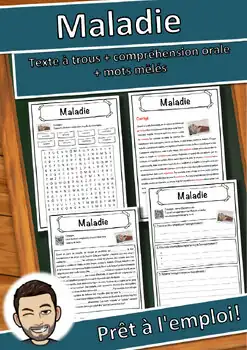
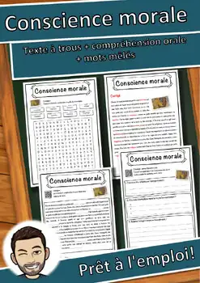
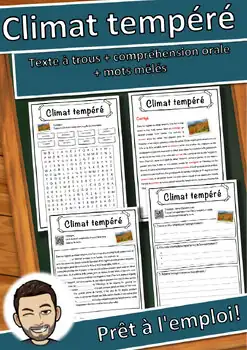
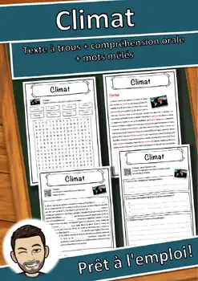
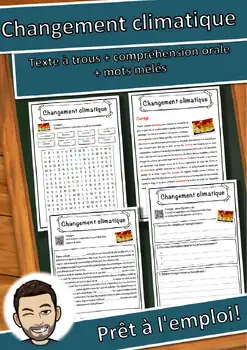
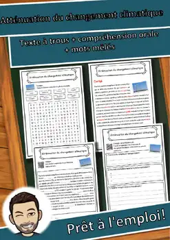
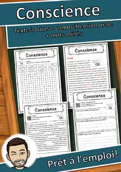
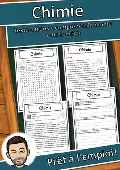
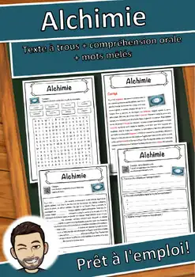

Fiches Sciences et santé – 6e année
14 fiches Sciences et santé pour le niveau 6e année, prêtes à imprimer : Maladie infantile, Maladie d'Alzheimer, Maladie, Element et bien d'autres. Chaque fiche indique le niveau, le nombre de pages et un aperçu, avec un lien direct vers TpT.
14 ressources
Maladie infantile – Texte à trous, compréhension orale et mots mêlés

Maladie d'Alzheimer – Texte à trous, compréhension orale et mots mêlés

Maladie – Compréhension de lecture : texte à trous, écoute et mots mêlés

Element – Compréhension de lecture : texte à trous, écoute et mots mêlés

Conscience morale – Texte à trous, compréhension orale et mots mêlés

Climat tempéré – Compréhension de lecture : texte à trous, écoute et mots mêlés

Climat – Compréhension de lecture : texte à trous, écoute et mots mêlés

Changement climatique – Texte à trous, compréhension orale et mots mêlés

Atténuation du changement climatique – Lecture, écoute et mots mêlés (FLS/FLE)
Grève étudiante pour le climat – Lecture, écoute et mots mêlés (FLS/FLE)

Conscience – Compréhension de lecture : texte à trous, écoute et mots mêlés

Chimie – Compréhension de lecture : texte à trous, écoute et mots mêlés
Chemin de fer – Compréhension de lecture : texte à trous, écoute et mots mêlés

Alchimie – Compréhension de lecture : texte à trous, écoute et mots mêlés
Aucune ressource trouvée – essaie un autre mot ou un autre filtre.